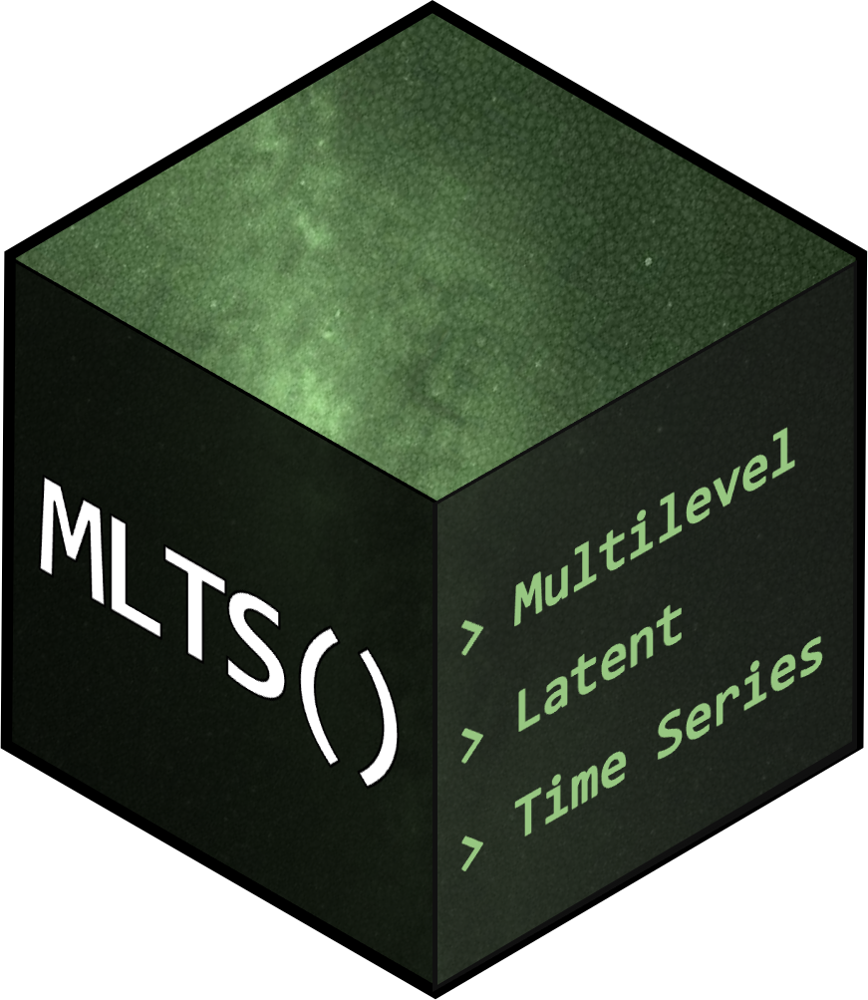

Fit Bayesian Multilevel Manifest or Latent Time-Series Models
Source:R/mlts_fit.R
mlts_fit.RdFit Bayesian Multilevel Manifest or Latent Time-Series Models
Usage
mlts_fit(
model,
data = NULL,
id,
group = NULL,
ts,
covariates = NULL,
outcomes = NULL,
outcome_pred_btw = NULL,
center_covs = TRUE,
time = NULL,
tinterval = NULL,
beep = NULL,
days = NULL,
n_overnight_NAs,
max_NA_seq = NULL,
na.rm = FALSE,
iter = 500,
chains = 2,
cores = 2,
monitor_person_pars = FALSE,
monitor_all_pars = FALSE,
get_SD_latent = FALSE,
fit_model = TRUE,
print_message = TRUE,
print_warning = TRUE,
...
)Arguments
- model
data.frame. Output ofmlts_modeland related functions.- data
An object of class
data.frame(or one that can be coerced to that class) containing data of all variables used in the model. Alternatively, a list object with simulated data created bymlts_simcan be entered directly and allows for comparison of estimates and true population paramter values used in the data generation.- id
Character. The variable in
datathat identifies the observational cluster unit. Not necessary whendatais a list object of simulated data generated withmlts_sim.- group
Character. The variable in
datathat identifies the grouping variable across cluster units.- ts
Character. The variable(s) in
datathat contain the time-series construct(s) or their indicator variable(s). If multiple constructs are provided in themodel, multiple entries are necessary. Note that the order of variable names provided intshas to match the specification made in themodel. E.g., if multiple constructs (e.g.,mlts_model(q = 2)) are provided the order of variables names provided intsdetermines which construct is referred to as mu_1, phi(1)_11, etc..- covariates
Named character vector. An optional named vector of characters to refer to predictors of random effects as specified in the
model. Note that specifyingcovariatesis only necessary if the respective variable name(s) indatadiffer from the variables names specified inmodel.- outcomes
Named character vector. Similar to
covariates, an optional named vector of characters to refer to outcome predicted by random effects as specified in themodel. Note that specifyingoutcomesis only necessary if the respective variable name(s) indatadiffer from the outcome variable name(s) specified inmodel.- outcome_pred_btw
Named character vector. Similar to
covariates, an optional named vector of characters to refer to additional between-level variables entered as outcome predictor(s) as specified in themodel. Note that specifyingoutcome_pred_btwis only necessary if the respective variable name(s) indatadiffer from the variable name(s) specified inmodel.- center_covs
Logical. Between-level covariates used as predictors of random effects will be grand-mean centered before model fitting by default. Set
center_covstoFALSEwhen including categorical predictors into the set ofcovariates. Note that in this case, additional continuous covariates should be grand-mean centered prior to usingmlts_fit. Ifgroupis specified, covariates will be centered on their respective group mean.- time
Character. The variable in
datathat contains the (continuous) time of observation.- tinterval
The step interval for approximating equally spaced observations in time by insertion of missing values, to be specified with respect to the time stamp variable provided in time. Procedure for inserting missing values resembles the procedure for time shift transformation as described in Asparouhov, Hamaker, & Muthén (2018).
- beep
Character. The variable in
datathat contains the running beep number starting with 1 for each person.- days
Optional. If a running beep identifier is provided via the
beepargument and observations are nested within days (or similar grouping unit), the variable indatathat contains the day identifier can be added to correct for overnight lags (see Details).- n_overnight_NAs
Optional. The number of
NArows to add after the last observation of each day (ifdaysis provided).- max_NA_seq
Integer. Specify a maximum number of consecutive missing values. Can decrease estimation times drastically in the presence of very long sequences of missing values (e.g., when setting tinterval to values of small time steps).
- na.rm
logical. Per default, missing values remain in the data and will be imputed during model estimation. Set to
TRUEto remove all rows with missing values in variables given ints.- iter
A positive integer specifying the number of iterations for each chain (including 50% used as warmup). The default is 500.
- chains
A positive integer specifying the number of Markov chains. The default is 2.
- cores
The number of cores to use when executing the Markov chains in parallel. The default is 2 (see
stan).- monitor_person_pars
Logical. Should person parameters (i.e., values of the latent variables) be stored? Default is FALSE.
- monitor_all_pars
Logical. Should all parameters be stored? Default is FALSE.
- get_SD_latent
Logical. Set to
TRUEto obtain standardized estimates in multiple-indicator models.- fit_model
Logical. Set to FALSE to avoid fitting the model which may be helpful to inspect prepared data used for model estimation (default = TRUE).
- print_message
Logical. Print messages based on defined inputs (default = TRUE).
- print_warning
Logical. Print warnings based on defined inputs (default = TRUE).
- ...
Additional arguments passed to
sampling.
Value
An object of class mltsfit.
The object is a list containing the following components:
- model
the model object passed to
mlts_fit- data
the preprocessed data used for fitting the model
- param.labels
a
data.framethat provides the names of parameters used in the stan model. These parameter names are necessary when running standard post-processing functions usingmlts_fit$stanfit- pop.pars.summary
a
data.framethat contains summary statistics for all parameter inmodel- person.pars.summary
if
monitor_person_pars = TRUE, adata.framecontaining summary statistics for cluster-specific parameters is provided- standata
a
listwith the data as passed tosampling- stanfit
an object of class
stanfitwith the raw output created bysampling- posteriors
an
arrayof the MCMC chain results for all parameters inmodelcreated byrstan::extractwithdimnamesadapted to match the parameter names provided inmodel
References
Asparouhov, T., Hamaker, E. L., & Muthén, B. (2018). Dynamic Structural Equation Models. Structural Equation Modeling: A Multidisciplinary Journal, 25(3), 359–388. doi:10.1080/10705511.2017.1406803
Examples
# \donttest{
# build simple vector-autoregressive mlts model for two time-series variables
var_model <- mlts_model(q = 2)
# fit model with (artificial) dataset ts_data
fit <- mlts_fit(
model = var_model,
data = ts_data,
ts = c("Y1", "Y2"), # time-series variables
id = "ID", # cluster identifier variable
time = "time", # time variable
tinterval = 1 # interval for approximation of equidistant measurements,
)
#> Time series variables as indicated by parameter subscripts:
#> 1 --> Y1
#> 2 --> Y2
#>
#> Note that obtaining (standardized) estimates by cluster,
#> requires settting `monitor_person_pars = TRUE`. However, keeping the default option
#> (`monitor_person_pars = FALSE`) can improve sampling times.
#> Warning: There were 4 divergent transitions after warmup. See
#> https://mc-stan.org/misc/warnings.html#divergent-transitions-after-warmup
#> to find out why this is a problem and how to eliminate them.
#> Warning: There were 1 chains where the estimated Bayesian Fraction of Missing Information was low. See
#> https://mc-stan.org/misc/warnings.html#bfmi-low
#> Warning: Examine the pairs() plot to diagnose sampling problems
#> Warning: The largest R-hat is NA, indicating chains have not mixed.
#> Running the chains for more iterations may help. See
#> https://mc-stan.org/misc/warnings.html#r-hat
#> Warning: Bulk Effective Samples Size (ESS) is too low, indicating posterior means and medians may be unreliable.
#> Running the chains for more iterations may help. See
#> https://mc-stan.org/misc/warnings.html#bulk-ess
#> Warning: Tail Effective Samples Size (ESS) is too low, indicating posterior variances and tail quantiles may be unreliable.
#> Running the chains for more iterations may help. See
#> https://mc-stan.org/misc/warnings.html#tail-ess
# inspect model summary
summary(fit)
#> Time series variables as indicated by parameter subscripts:
#> 1 --> Y1
#> 2 --> Y2
#> Data: 1100 observations in 55 IDs
#> Model convergence criteria:
#> Maximum Potential Scale Reduction Factor (PSR; Rhat): 1.254 (should be < 1.01)
#> Minimum Bulk ESS: 8 (should be > 200, 100 per chain)
#> Minimum Tail ESS: 28 (should be > 200, 100 per chain)
#> Number of divergent transitions: 4 (should be 0)
#>
#> Posterior Summary Statistics
#> Fixed Effects:
#> Mean SD 2.5% 97.5% Rhat Bulk_ESS Tail_ESS
#> mu_1 0.783 0.142 0.503 1.061 1.005 637 436
#> mu_2 0.334 0.172 0.025 0.638 0.999 690 352
#> phi(1)_11 0.354 0.039 0.280 0.428 1.012 76 154
#> phi(1)_12 -0.113 0.049 -0.202 -0.009 0.999 212 402
#> phi(1)_21 0.045 0.040 -0.036 0.125 1.016 204 266
#> phi(1)_22 0.135 0.042 0.056 0.218 1.024 224 197
#> ln.sigma2_1 -0.198 0.050 -0.298 -0.112 1.014 127 275
#> ln.sigma2_2 -0.293 0.068 -0.425 -0.158 0.998 159 203
#> r.zeta_12 -0.150 0.031 -0.208 -0.089 1.008 465 377
#>
#> Random Effects SDs:
#> Mean SD 2.5% 97.5% Rhat Bulk_ESS Tail_ESS
#> sigma_mu_1 1.026 0.108 0.823 1.269 1.005 562 399
#> sigma_mu_2 1.286 0.124 1.069 1.555 1.006 516 292
#> sigma_phi(1)_11 0.103 0.052 0.016 0.207 1.075 27 54
#> sigma_phi(1)_12 0.224 0.050 0.132 0.321 1.057 43 139
#> sigma_phi(1)_21 0.172 0.044 0.096 0.257 1.030 82 129
#> sigma_phi(1)_22 0.173 0.044 0.096 0.271 1.054 65 133
#> sigma_ln.sigma2_1 0.145 0.070 0.039 0.312 1.116 13 28
#> sigma_ln.sigma2_2 0.266 0.088 0.105 0.428 1.053 49 109
#>
#> Random Effects Correlations:
#> Mean SD 2.5% 97.5% Rhat Bulk_ESS Tail_ESS
#> mu_1.mu_2 -0.108 0.131 -0.369 0.149 1.015 409 270
#> mu_1.phi(1)_11 -0.055 0.273 -0.593 0.516 1.013 232 333
#> mu_1.phi(1)_12 0.234 0.179 -0.134 0.557 1.008 261 287
#> mu_1.phi(1)_21 -0.055 0.207 -0.448 0.339 1.006 301 431
#> mu_1.phi(1)_22 -0.166 0.200 -0.542 0.203 1.027 173 241
#> mu_1.ln.sigma2_1 0.080 0.274 -0.463 0.577 1.002 264 304
#> mu_1.ln.sigma2_2 0.216 0.214 -0.194 0.645 1.009 257 255
#> mu_2.phi(1)_11 -0.136 0.267 -0.645 0.379 1.003 408 299
#> mu_2.phi(1)_12 0.081 0.184 -0.289 0.434 1.016 223 294
#> mu_2.phi(1)_21 0.153 0.207 -0.252 0.601 1.020 159 94
#> mu_2.phi(1)_22 -0.404 0.184 -0.719 -0.050 1.015 234 228
#> mu_2.ln.sigma2_1 -0.079 0.267 -0.588 0.446 1.009 274 227
#> mu_2.ln.sigma2_2 -0.062 0.211 -0.498 0.350 1.007 282 291
#> phi(1)_11.phi(1)_12 0.019 0.269 -0.492 0.628 1.003 193 255
#> phi(1)_11.phi(1)_21 0.169 0.279 -0.408 0.708 1.023 189 200
#> phi(1)_11.phi(1)_22 0.245 0.301 -0.384 0.752 1.001 114 235
#> phi(1)_11.ln.sigma2_1 0.210 0.341 -0.442 0.803 1.004 82 140
#> phi(1)_11.ln.sigma2_2 -0.053 0.293 -0.587 0.547 1.000 162 172
#> phi(1)_12.phi(1)_21 -0.269 0.230 -0.662 0.200 1.025 159 235
#> phi(1)_12.phi(1)_22 0.062 0.235 -0.416 0.496 1.008 159 205
#> phi(1)_12.ln.sigma2_1 0.240 0.279 -0.339 0.744 1.001 181 336
#> phi(1)_12.ln.sigma2_2 -0.007 0.261 -0.536 0.471 1.003 141 287
#> phi(1)_21.phi(1)_22 0.166 0.247 -0.316 0.592 0.998 195 272
#> phi(1)_21.ln.sigma2_1 -0.056 0.282 -0.585 0.500 1.005 202 304
#> phi(1)_21.ln.sigma2_2 -0.251 0.236 -0.675 0.261 1.024 143 243
#> phi(1)_22.ln.sigma2_1 0.273 0.282 -0.358 0.739 1.034 160 220
#> phi(1)_22.ln.sigma2_2 -0.133 0.265 -0.612 0.368 1.009 175 244
#> ln.sigma2_1.ln.sigma2_2 -0.114 0.305 -0.653 0.479 1.032 90 205
#>
#> Samples were drawn using NUTS on Fri Oct 16 13:08:49 2026.
#> For each parameter, Bulk_ESS and Tail_ESS are measures of effective
#> sample size, and Rhat is the potential scale reduction factor
#> on split chains (at convergence, Rhat = 1).
# }